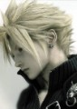
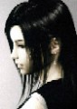
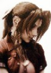
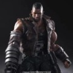
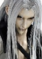

最终幻想7
最终幻想7角色设定
名单按应用 arrays.xml 的顺序，从第一条开始，共 6 人。

克劳德
克劳德·斯特莱夫（日文：クラウド・ストライフ；英文：Cloud Strife），是日本史克威尔公司出品的电子游戏《最终幻想VII》中的男主角。
立绘与下一条「克劳德·斯特莱夫」相同，都是应用里的 role_cloud.jpg，这里没有另换图片。
克劳德·斯特莱夫
克劳德·斯特莱夫（日文：クラウド・ストライフ；英文：Cloud Strife），是日本史克威尔公司出品的电子游戏《最终幻想VII》中的男主角。

蒂法·洛克哈特
蒂法·洛克哈特是史克威尔公司旗下游戏《最终幻想VII》及其衍生作品中的女主角之一。

爱丽丝·盖恩斯巴勒
爱丽丝·盖恩斯巴勒（英文：Aerith Gainsborough；日文：エアリス ゲインズブール），是日本史克威尔公司旗下作品《最终幻想Ⅶ》系列中的女主角之一。

巴雷特·华莱士
巴雷特·华莱士，男，日本史克威尔艾尼克斯公司发布的游戏《最终幻想7》中角色，由小林正宽（日语），Beau Billingslea（原版，英语）、John Eric Bentley（重制版）配音。

萨菲罗斯
萨菲罗斯是《FFVII》中的大型企业神罗公司的实验成果，当他还是一个胎儿时就被注射了来自外星生命杰诺瓦的细胞。在发现这一点后，萨菲罗斯决定要随着他自认的命运，打算控制星球，而克劳德和其他游戏主角们则试图阻止他。